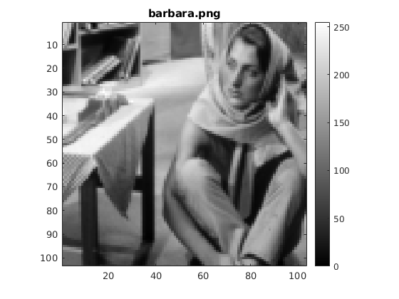
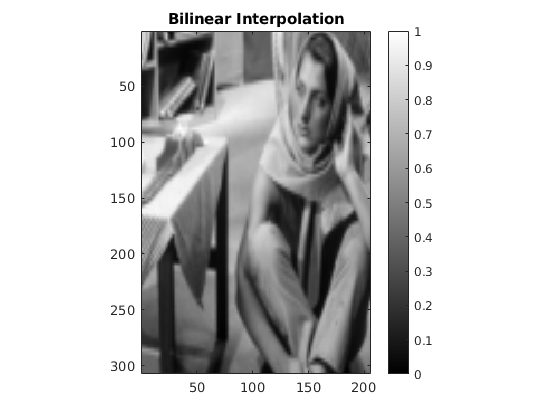
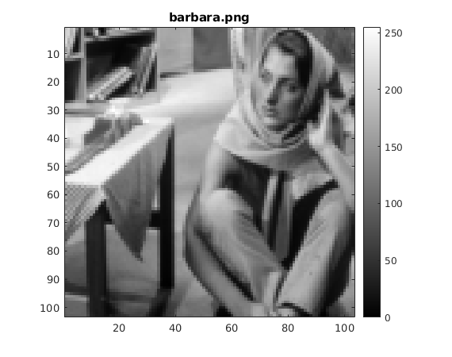

Image Resizing
Report for Part 1 of the assignment
Contents
Image Shrinking
Image enlargement using Bilinear Interpolation
Image enlargement using Nearest Neighbor Interpolation
Image Shrinking
Image enlargement using Bilinear Interpolation
 
Image enlargement using Nearest Neighbor Interpolation

Published with MATLAB® R2018a